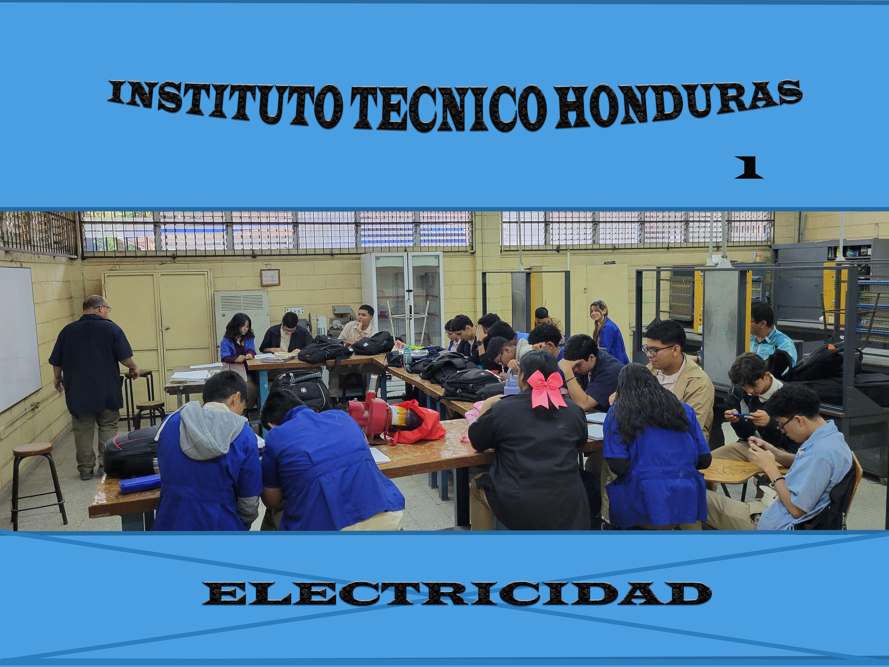
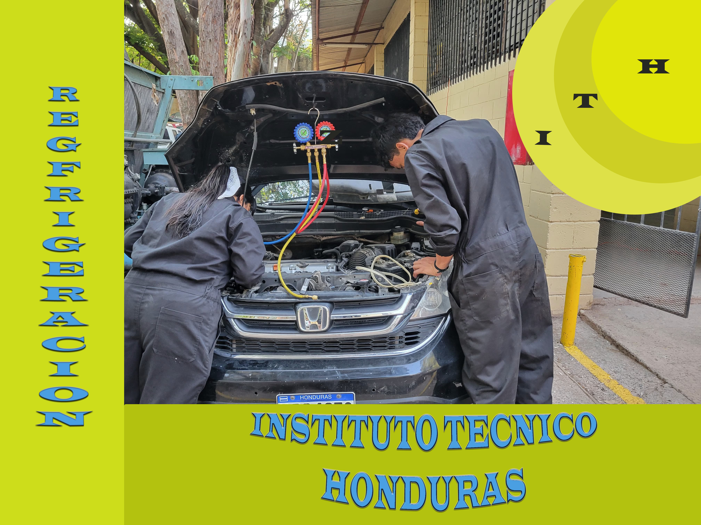
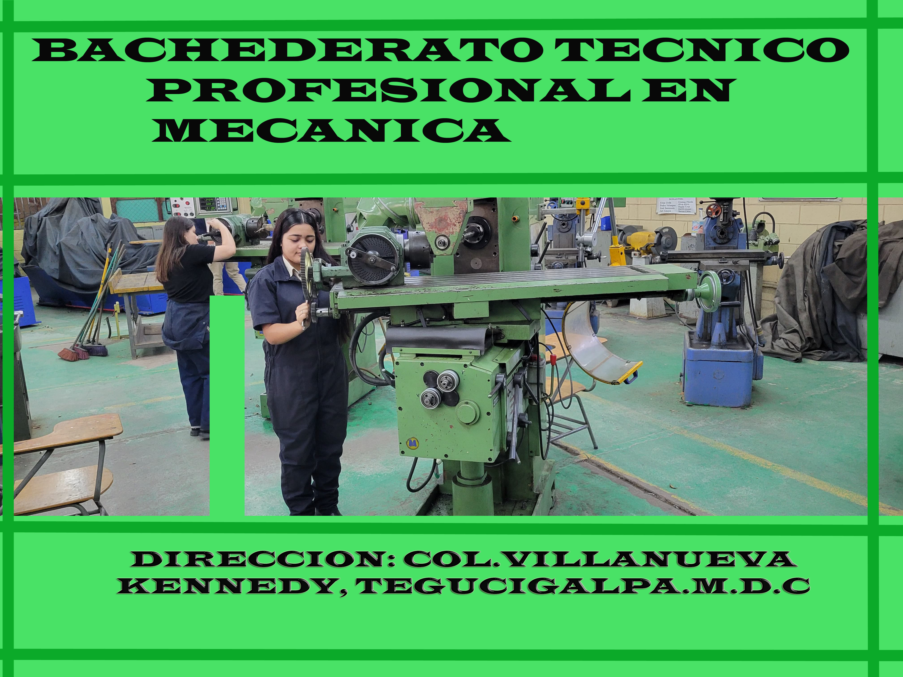
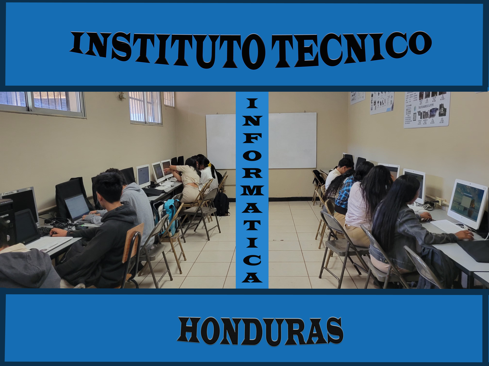
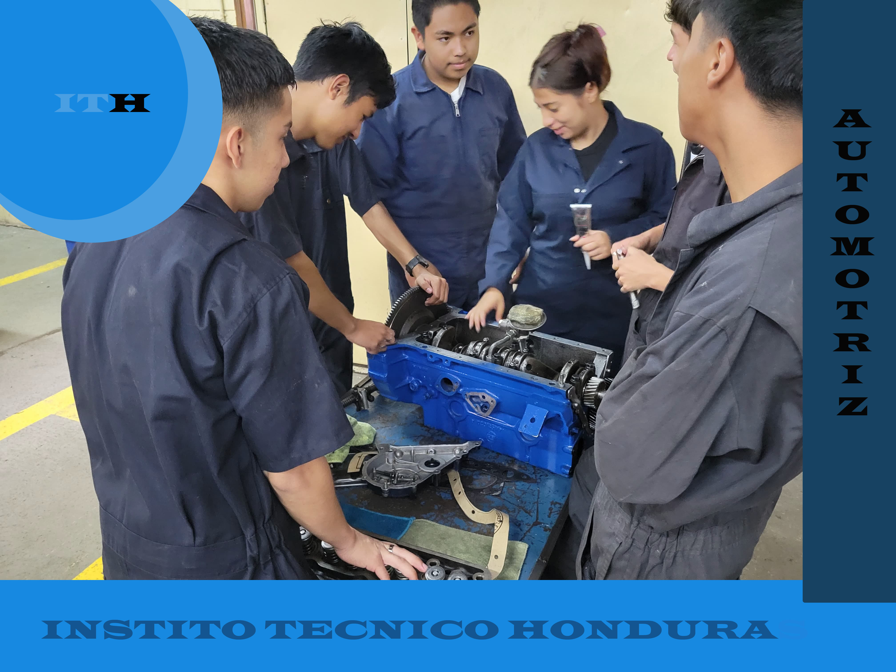

INSTITUTO TÉCNICO HONDURAS
El Instituto Técnico Honduras es una institución educativa reconocida por su enfoque en la formación tecnológica. Su oferta académica abarca áreas fundamentales para el desarrollo...
Carreras del Instituto Técnico Honduras
2025
Bachillerato Técnico Profesional en Electricidad.
Bachillerato Técnico Profesional en Electrónica.
Bachillerato Técnico Profesional en Refrigeración y Aire Acondicionado.
Bachillerato Técnico Profesional en Mecánica Industrial.
Bachillerato Técnico Profesional en Informática.
Bachillerato Técnico Profesional en mecanica Automotriz.
Bachillerato Técnico Profesional en Informática con orientación a Robótica.

Bachillerato Técnico Profesional en Electricidad
Esta carrera prepara a los estudiantes para trabajar en instalaciones eléctricas residenciales, comerciales e industriales. Aprenden a interpretar planos eléctricos, manejar herramientas y equipos, realizar mantenimiento preventivo y correctivo, y aplicar normas de seguridad eléctrica. Ideal para quienes desean trabajar en compañías eléctricas o crear su propio negocio.

Bachillerato Técnico Profesional en Electrónica
Este bachillerato enseña a los estudiantes a trabajar con circuitos electrónicos, sistemas digitales, microcontroladores y reparación de dispositivos electrónicos. Es perfecto para quienes quieren diseñar, montar y mantener equipos electrónicos, o continuar estudios en ingeniería electrónica.

Bachillerato Técnico Profesional en Refrigeración y Aire Acondicionado
En esta carrera, los estudiantes aprenden a instalar, reparar y dar mantenimiento a sistemas de refrigeración y climatización. Se enfocan en el manejo de gases refrigerantes, normas ambientales, y tecnologías modernas para mantener la eficiencia energética de los equipos.
Bachillerato Técnico Profesional en Mecánica Industrial
Forma técnicos en el diseño, fabricación y mantenimiento de máquinas industriales. Aprenden soldadura, lectura de planos, uso de herramientas manuales y maquinaria como tornos y fresadoras. Es ideal para quienes desean trabajar en fábricas o talleres de manufactura.

Bachillerato Técnico Profesional en Informática
Este programa enseña programación, redes, mantenimiento de computadoras, diseño web, bases de datos y más. Es ideal para jóvenes apasionados por la tecnología, que deseen continuar estudios universitarios en informática o comenzar su carrera en el sector tecnológico.
Bachillerato Técnico Profesional en Informática con orientación a Robótica
Esta especialidad combina informática con robótica educativa. Se enseña programación de microcontroladores, ensamblaje de robots, automatización, y control remoto. Perfecta para estudiantes que sueñan con crear tecnología innovadora o seguir carreras en mecatrónica o robótica.

Bachillerato Técnico Profesional en Mecánica Automotriz
En esta carrera, los estudiantes se forman en el diagnóstico, reparación y mantenimiento de sistemas mecánicos, eléctricos y electrónicos de vehículos. Aprenden sobre motores, transmisiones, frenos, suspensión, inyección electrónica y más. Ideal para jóvenes que desean trabajar en talleres automotrices, concesionarias, o montar su propio negocio.
